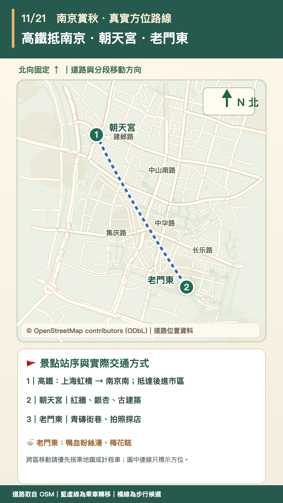
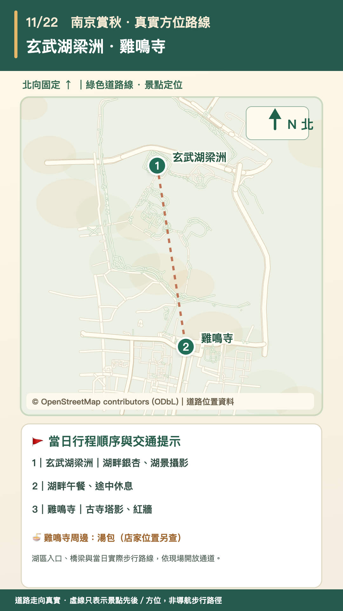
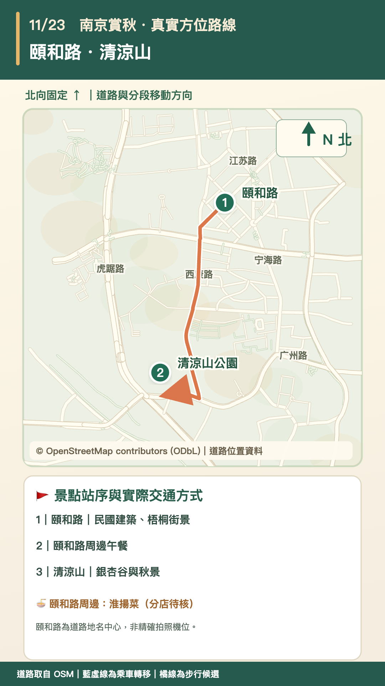
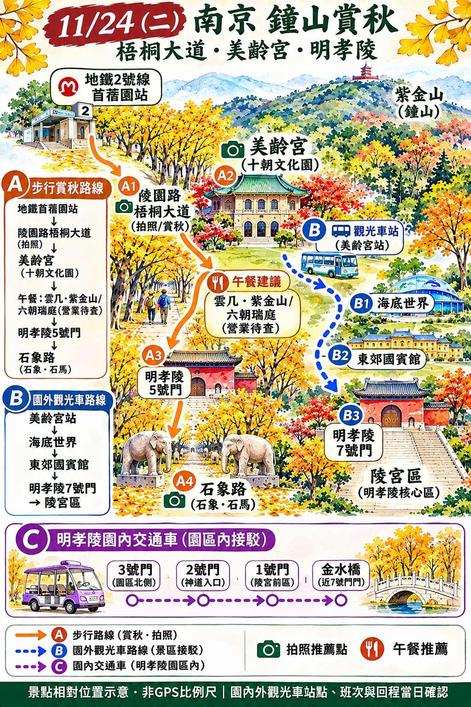
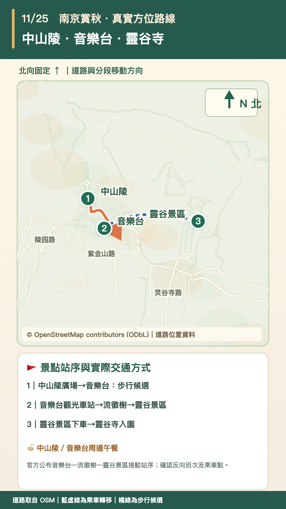
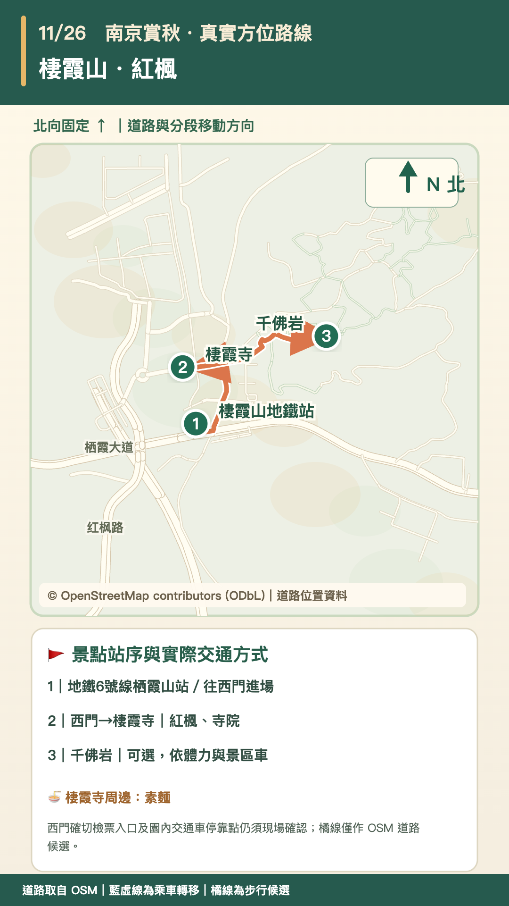
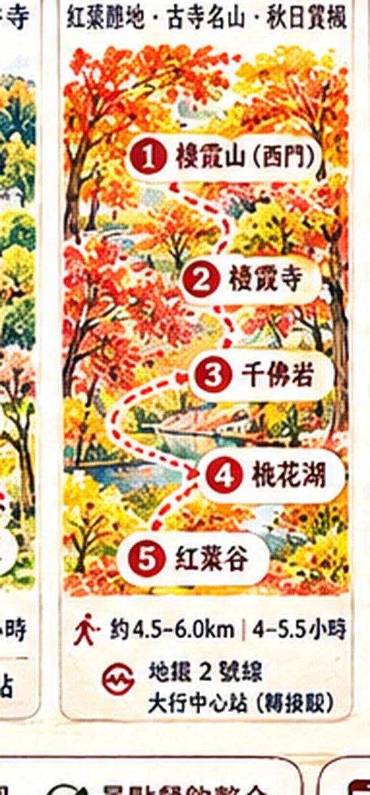
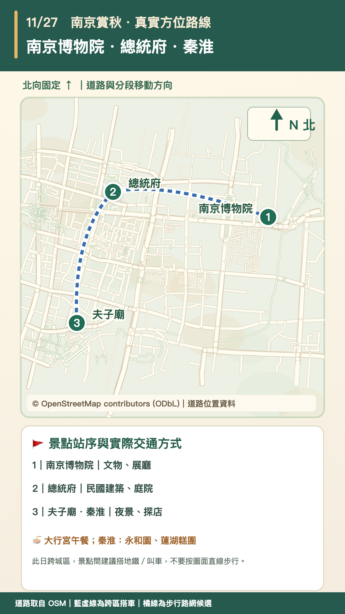
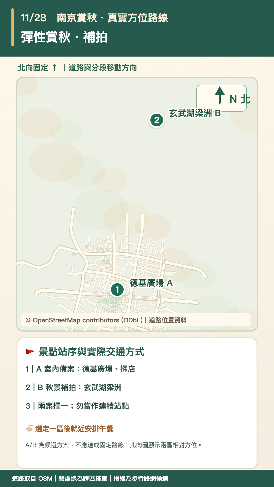
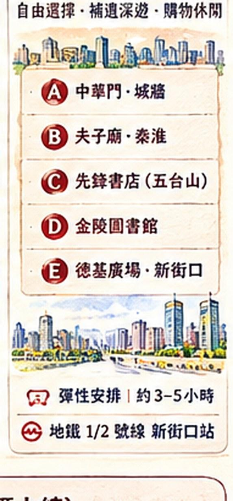

📍 站位：庭院開放區
取景：紅牆＋銀杏
📍 旅途中・一眼導航
每天只看一條路線，快速找路線圖、去程、回程；完整圖文與餐廳仍在原行程。
開啟旅途中模式📥 12日行程離線閱讀
可儲存本頁全部12天的文字、餐飲與路線資料；離線時外部高德、美團及其他網頁連結仍需網路。
🏨 住宿與交通基地
上海 11/19–20、11/29：盎格酒店（龍陽路地鐵站店）
南京 11/21–28：雨花精品酒店式公寓（天隆寺站）
📸 11/20 上海探店｜手機導覽
上海各路線可分別查看；武康路選項 1 以原手繪整合圖、地鐵去回程及沿途餐飲為優先，避免重複景點清單及未實作功能。
開啟第二天新版行程書🍁 11/20 下午選項快速查看
銀行辦完再決定；優先選一條主線；武康庭與安福路已包含在武康路選項1內，不另列重複路線。
🛗 南京 11/22–11/27｜省力交通與舊圖
逐日查看既有路線圖、去回程起點、景區接駁限制及地鐵無障礙查證狀態。尚未核實的電梯出口明確標示，不當作已確認。
開啟南京六日省力導航圖文卡11/19（四）｜抵達上海・入住休息

抵達上海後先辦理入境、領行李及前往龍陽路住宿區。當天以入住、補給與休息為主，不安排需要趕時間的景點。
依實際抵達機場與航廈選交通；請以訂房確認單核對酒店地址，不要只靠同名搜尋結果。
11/20（五）｜銀行辦事・上海七條路線選擇路線 ▾
上午先辦理銀行業務；下午依結束時間選一條主線。武康庭與安福路已包含在選項01，不重複列項。

11/21（六） 高鐵赴南京・老門東展開 ▾
📍 11/21｜清晰可讀的完整路線順序
- 01朝天宮 約 13:20 抵達
- 02老門東 約 15:50 抵達
本清單依原日程重排，非由模糊水彩圖辨識。地理動線仍待逐點校核。

查看舊水彩局部素材（原始檔左右已裁缺，非完整路線圖）

⏱️ 慢走1.5倍｜到達機位與拍照時間
到達時間是估計，含慢走及必要轉乘緩衝；不是精確定位或預約時段。
13:00出發／前站 → 約13:20抵達｜朝天宮
🚶 抵達後步行20–30分
📸 參觀拍照50–70分
⚠️ 高鐵晚到則縮短
15:30出發／前站 → 約15:50抵達｜老門東
🚶 進老街步行20–30分
📸 街景拍照40–60分
⚠️ 17:00–18:00用餐，之後回飯店
🚇 怎麼去
上海虹橋→南京南→天隆寺；入住雨花精品；朝天宮、老門東
📷 看什麼・怎麼拍
朝天宮看明清官式建築；老門東拍青磚街巷
☔ 雨天／替代
雨天優先朝天宮室內展覽
🍜 老門東 鴨血粉絲湯
🍜 老門東 梅花糕
📸 今日沿路最佳機位（依景點順序）
No.6｜朝天宮｜朝天宮銀杏與紅牆
從庭院開放處取景，讓銀杏枝葉、紅牆與殿宇同框；不必走到高處。
📷 今日景點照片・最佳拍照點
⚠️ 本圖為「入口→步道→建議站位→主景」的概念相對位置圖，不是依真實園區方位測繪，也不代表入口與機位間的實際路徑、距離或東西南北。高德目前連至景點區域，未核實精確拍攝座標；現場以開放道路與標示為準。
11/22（日） 玄武湖・雞鳴寺展開 ▾
📍 11/22｜清晰可讀的完整路線順序
- 01玄武湖梁洲秋景 約 09:25 抵達
- 02玄武湖周邊午餐 約 12:15 抵達
- 03雞鳴寺塔影 約 13:50 抵達
本清單依原日程重排，非由模糊水彩圖辨識。地理動線仍待逐點校核。

查看舊水彩局部素材（原始檔左右已裁缺，非完整路線圖）

⏱️ 慢走1.5倍｜到達機位與拍照時間
到達時間是估計，含慢走及必要轉乘緩衝；不是精確定位或預約時段。
09:00出發／前站 → 約09:25抵達｜玄武湖梁洲秋景
🚶 從入口至候選拍照區25–40分
📸 拍照45–60分
⚠️ 梁洲距入口依實際入口而異
12:00出發／前站 → 約12:15抵達｜玄武湖周邊午餐
🚶 移動15–25分
📸 用餐60–75分
⚠️ 先休息再走下一站
13:30出發／前站 → 約13:50抵達｜雞鳴寺塔影
🚶 入寺／坡道步行20–35分
📸 參觀拍照45–60分
⚠️ 城牆為選配，額外至少60分
🚇 怎麼去
天隆寺搭1號線至玄武門；再往雞鳴寺、明城牆
📷 看什麼・怎麼拍
玄武湖看湖光城牆；城牆拍湖景
☔ 雨天／替代
雨天改南京城牆博物館
🍜 雞鳴湯包 南京
📸 今日沿路最佳機位（依景點順序）
No.3｜玄武湖｜玄武湖梁洲銀杏亭閣
從梁洲湖畔找銀杏與亭閣同框；原圖具體亭閣未核實，以現場景觀選位。
No.5｜雞鳴寺｜雞鳴寺秋葉塔影
在開放步道利用秋葉框住塔樓，略低角度拍攝。
📷 今日景點照片・最佳拍照點
📍 站位：梁洲湖畔
取景：銀杏＋亭閣
📍 站位：開放步道
取景：秋葉框住塔
⚠️ 本圖為「入口→步道→建議站位→主景」的概念相對位置圖，不是依真實園區方位測繪，也不代表入口與機位間的實際路徑、距離或東西南北。高德目前連至景點區域，未核實精確拍攝座標；現場以開放道路與標示為準。
11/23（一） 頤和路・清涼山展開 ▾
📍 11/23｜清晰可讀的完整路線順序
- 01頤和路街景 約 09:20 抵達
- 02頤和路午餐 約 11:45 抵達
- 03清涼山銀杏谷 約 14:00 抵達
本清單依原日程重排，非由模糊水彩圖辨識。地理動線仍待逐點校核。

查看舊水彩局部素材（原始檔左右已裁缺，非完整路線圖）

⏱️ 慢走1.5倍｜到達機位與拍照時間
到達時間是估計，含慢走及必要轉乘緩衝；不是精確定位或預約時段。
09:00出發／前站 → 約09:20抵達｜頤和路街景
🚶 出站至街區20–30分
📸 拍照60–75分
⚠️ 走走停停拍公館
11:30出發／前站 → 約11:45抵達｜頤和路午餐
🚶 移動15–20分
📸 用餐60–75分
⚠️ 留足坐下休息
13:30出發／前站 → 約14:00抵達｜清涼山銀杏谷
🚶 從下車點步行20–35分
📸 拍照45–60分
⚠️ 可計程車到近入口
🚇 怎麼去
1號線鼓樓轉4號線雲南路；清涼山可短程打車
📷 看什麼・怎麼拍
頤和路看民國公館；清涼山拍銀杏落葉
☔ 雨天／替代
雨天改先鋒書店與咖啡館
🍜 頤和路 淮揚菜
📸 今日沿路最佳機位（依景點順序）
No.7｜頤和路｜頤和路梧桐街景
沿合法人行道取街道縱深，手機2×鏡頭壓縮行道樹；勿站車道。
加選 A5｜清涼山銀杏谷
近距離拍銀杏與落葉步道；下雨時石階易滑，縮短步行。
📷 今日景點照片・最佳拍照點
📍 站位：街邊人行道
取景：梧桐＋公館
📍 站位：銀杏谷步道
取景：金葉＋小徑
⚠️ 本圖為「入口→步道→建議站位→主景」的概念相對位置圖，不是依真實園區方位測繪，也不代表入口與機位間的實際路徑、距離或東西南北。高德目前連至景點區域，未核實精確拍攝座標；現場以開放道路與標示為準。
11/24（二） 梧桐大道・美齡宮・明孝陵展開 ▾
📍 11/24｜清晰可讀的完整路線順序
- 01陵園路梧桐大道 約 09:20 抵達
- 02美齡宮 約 10:30 抵達
- 03景區午餐 約 12:00 抵達
- 04明孝陵石象路 約 13:40 抵達
- 05燕雀湖（可選） 約 15:35 抵達
本清單依原日程重排，非由模糊水彩圖辨識。地理動線仍待逐點校核。

⏱️ 慢走1.5倍｜到達機位與拍照時間
到達時間是估計，含慢走及必要轉乘緩衝；不是精確定位或預約時段。
08:30出發／前站 → 約09:20抵達｜陵園路梧桐大道
🚶 飯店出發約50–70分含地鐵、出站慢走
📸 拍照35–45分
⚠️ 車流多，不站車道
10:10出發／前站 → 約10:30抵達｜美齡宮
🚶 步行或接駁20–30分
📸 建築與樹景拍照45–60分
⚠️ 空拍角度改地面拍
11:45出發／前站 → 約12:00抵達｜景區午餐
🚶 走到順路餐飲點15–25分
📸 用餐60–75分
⚠️ 別為餐廳折返
13:15出發／前站 → 約13:40抵達｜明孝陵石象路
🚶 接駁／步行25–40分
📸 石獸彩葉拍照60–75分
⚠️ 神道較長，保留休息
15:10出發／前站 → 約15:35抵達｜燕雀湖（可選）
🚶 移動25–40分，需依實際出口調整
📸 拍照25–35分
⚠️ 疲累就直接回飯店
🚇 怎麼去
1號線新街口轉2號線苜蓿園；園內搭接駁
📷 看什麼・怎麼拍
陵園路拍梧桐透視；美齡宮看建築；明孝陵神道石像
☔ 雨天／替代
雨天改室內展館；明孝陵換晴日
🍜 南京大牌檔 中山陵店
📸 今日沿路最佳機位（依景點順序）
No.1｜陵園路｜陵園路梧桐大道
從安全人行道拍金黃梧桐的道路透視，晨間柔光較好。
No.2｜空拍替代｜美齡宮地面替代角度
原圖 No.2 為高空環形林道，地面無法複製；改拍建築屋頂與周邊樹冠。
加選 A1｜明孝陵石象路
石獸與紅黃秋葉同框，沿神道步道拍道路縱深。
加選 A2｜燕雀湖落羽杉
湖岸拍落羽杉與倒影；若體力或時間不足可略過。
📷 今日景點照片・最佳拍照點
📍 站位：安全人行道
取景：樹蔭隧道
📍 站位：建築旁開放區
取景：屋頂＋樹冠
📍 站位：石象路神道
取景：石獸＋彩葉
📍 站位：湖畔開放區
取景：落羽杉倒影
⚠️ 本圖為「入口→步道→建議站位→主景」的概念相對位置圖，不是依真實園區方位測繪，也不代表入口與機位間的實際路徑、距離或東西南北。高德目前連至景點區域，未核實精確拍攝座標；現場以開放道路與標示為準。
11/25（三） 中山陵・音樂台・靈谷寺展開 ▾
📍 11/25｜清晰可讀的完整路線順序
- 01中山陵廣場 約 09:30 抵達
- 02音樂台觀眾席 約 11:05 抵達
- 03景區午餐 約 12:15 抵達
- 04靈谷寺／靈谷塔 約 14:15 抵達
本清單依原日程重排，非由模糊水彩圖辨識。地理動線仍待逐點校核。

查看舊水彩局部素材（原始檔左右已裁缺，非完整路線圖）

⏱️ 慢走1.5倍｜到達機位與拍照時間
到達時間是估計，含慢走及必要轉乘緩衝；不是精確定位或預約時段。
08:30出發／前站 → 約09:30抵達｜中山陵廣場
🚶 地鐵＋景區接駁約60–85分
📸 建築拍照45–60分
⚠️ 392級台階非必爬
10:45出發／前站 → 約11:05抵達｜音樂台觀眾席
🚶 步行20–30分
📸 拍白鴿與弧形舞台40–55分
⚠️ No.8地面替代
12:00出發／前站 → 約12:15抵達｜景區午餐
🚶 移動15–25分
📸 用餐60–75分
⚠️ 景區餐飲可能排隊
13:45出發／前站 → 約14:15抵達｜靈谷寺／靈谷塔
🚶 接駁＋步行30–50分
📸 拍照45–60分
⚠️ 流徽榭改為選配，勿硬塞
🚇 怎麼去
1號線轉2號線至鐘山景區；優先景區接駁
📷 看什麼・怎麼拍
中山陵看軸線；音樂台拍白鴿；靈谷寺看秋林
☔ 雨天／替代
雨天減少登階，改室內或短線
🍜 南京大牌檔 中山陵店
📸 今日沿路最佳機位（依景點順序）
No.8｜空拍替代｜音樂台觀眾席地面視角
原圖 No.8 為空拍；改由開放觀眾席較高排拍弧形舞台與白鴿。
加選 A3｜流徽榭湖景
在湖畔取亭台倒影，路線較遠可視體力選擇。
No.9｜靈谷景區｜靈谷塔秋色
在靈谷景區開放步道，以彩葉框住塔身。
📷 今日景點照片・最佳拍照點
📍 站位：廣場開放區
取景：紀念建築主軸
📍 站位：觀眾席上排
取景：弧形舞台＋白鴿
📍 站位：湖畔開放區
取景：亭台＋倒影
📍 站位：塔外開放步道
取景：彩葉框塔
⚠️ 本圖為「入口→步道→建議站位→主景」的概念相對位置圖，不是依真實園區方位測繪，也不代表入口與機位間的實際路徑、距離或東西南北。高德目前連至景點區域，未核實精確拍攝座標；現場以開放道路與標示為準。
11/26（四） 棲霞山紅楓展開 ▾
📍 11/26｜清晰可讀的完整路線順序
- 01棲霞寺入口 約 10:10 抵達
- 02棲霞山周邊午餐 約 11:45 抵達
- 03紅葉步道候選區 約 13:35 抵達
本清單依原日程重排，非由模糊水彩圖辨識。地理動線仍待逐點校核。

查看舊水彩局部素材（原始檔左右已裁缺，非完整路線圖）

⏱️ 慢走1.5倍｜到達機位與拍照時間
到達時間是估計，含慢走及必要轉乘緩衝；不是精確定位或預約時段。
08:30出發／前站 → 約10:10抵達｜棲霞寺入口
🚶 跨城區交通＋轉乘及末段步行約90–110分
📸 寺院拍照45–60分
⚠️ 地鐵出口／接駁待當日核對
11:30出發／前站 → 約11:45抵達｜棲霞山周邊午餐
🚶 移動15–25分
📸 用餐60–75分
⚠️ 休息後才往楓林
13:00出發／前站 → 約13:35抵達｜紅葉步道候選區
🚶 慢走25–45分，坡度影響較大
📸 拍照45–60分
⚠️ 雨天或坡陡則取消
🚇 怎麼去
天隆寺→南京南；6號線及接駁以當日官方資訊核實
📷 看什麼・怎麼拍
棲霞寺看古剎；棲霞山拍紅楓與寺院屋簷
☔ 雨天／替代
雨天換至11/28；改室內科舉博物館
🍜 棲霞寺 素麵
📸 今日沿路最佳機位（依景點順序）
No.4｜棲霞山｜棲霞山紅楓林道
沿開放步道取紅葉與林道透視，避免為拍照爬陡坡。
📷 今日景點照片・最佳拍照點
📍 站位：開放紅葉步道
取景：楓葉＋山徑
📍 站位：寺院開放區
取景：殿宇＋楓葉
⚠️ 本圖為「入口→步道→建議站位→主景」的概念相對位置圖，不是依真實園區方位測繪，也不代表入口與機位間的實際路徑、距離或東西南北。高德目前連至景點區域，未核實精確拍攝座標；現場以開放道路與標示為準。
11/27（五） 南京博物院・總統府・秦淮展開 ▾
📍 11/27｜清晰可讀的完整路線順序
- 01南京博物院入口 約 09:20 抵達
- 02大行宮方向午餐 約 12:25 抵達
- 03總統府 約 14:05 抵達
- 04夫子廟秦淮 約 17:25 抵達
本清單依原日程重排，非由模糊水彩圖辨識。地理動線仍待逐點校核。

查看舊水彩局部素材（原始檔左右已裁缺，非完整路線圖）

⏱️ 慢走1.5倍｜到達機位與拍照時間
到達時間是估計，含慢走及必要轉乘緩衝；不是精確定位或預約時段。
08:30出發／前站 → 約09:20抵達｜南京博物院入口
🚶 地鐵＋出站慢走約50–70分
📸 展廳參觀拍照120–150分
⚠️ 館內可能限制拍照；依規定
12:00出發／前站 → 約12:25抵達｜大行宮方向午餐
🚶 交通＋步行25–40分
📸 用餐60–75分
⚠️ 可縮短博物院非重點展廳
13:45出發／前站 → 約14:05抵達｜總統府
🚶 步行20–30分含安檢
📸 參觀拍照70–90分
⚠️ 毗盧寺銀杏改選配
17:00出發／前站 → 約17:25抵達｜夫子廟秦淮
🚶 地鐵＋步行25–40分
📸 晚餐60–75分；夜景拍照30–45分
⚠️ 疲累可取消夜景
🚇 怎麼去
1號線新街口轉2號線明故宮／大行宮；晚間夫子廟
📷 看什麼・怎麼拍
博物院看六朝文物；總統府看近代史；秦淮拍夜色
☔ 雨天／替代
雨天保留博物院；取消夜遊
🍜 永和園 夫子廟
🍜 蓮湖糕團店
📸 今日沿路最佳機位（依景點順序）
加選 A6｜毗盧寺銀杏（可選）
如當天銀杏葉況佳，可在南京博物院與總統府之間選擇短訪；不要為此犧牲博物院時間。
🏺 南京博物院｜重點館藏與照片
入館先看當日展廳公告。展品輪換，未核實者不保證展出。
乾隆《行圍圖》旋轉蓋瓶
特展館2樓9號展廳（依2026年展訊；入館再核對）
🖼️ 官方館藏／展覽照片入口《竹林七賢與榮啟期》磚畫
六朝歷史相關展區，確切展廳及當日展出待確認
🖼️ 官方館藏／展覽照片入口明洪武釉裡紅歲寒三友紋梅瓶
典藏重點，展出與展廳待確認
🖼️ 官方館藏／展覽照片入口金獸
典藏重點，原特展已結束；當日展出待確認
🖼️ 官方館藏／展覽照片入口漢代錯銀銅牛燈
典藏重點，展出與展廳待確認
🖼️ 官方館藏／展覽照片入口📷 今日景點照片・最佳拍照點
📍 站位：博物院建築前
取景：建築＋廣場
📍 站位：庭院開放區
取景：建築＋園林
📍 站位：河岸步道
取景：橋＋燈影
📍 站位：寺院開放區
取景：銀杏＋殿宇
⚠️ 本圖為「入口→步道→建議站位→主景」的概念相對位置圖，不是依真實園區方位測繪，也不代表入口與機位間的實際路徑、距離或東西南北。高德目前連至景點區域，未核實精確拍攝座標；現場以開放道路與標示為準。
11/28（六） 彈性賞秋・補拍展開 ▾
📍 11/28｜清晰可讀的完整路線順序
- 01補拍景點 約 09:30 抵達
- 02就近午餐 約 12:20 抵達
- 03德基／室內備案 約 14:20 抵達
本清單依原日程重排，非由模糊水彩圖辨識。地理動線仍待逐點校核。

查看舊水彩局部素材（原始檔左右已裁缺，非完整路線圖）

⏱️ 慢走1.5倍｜到達機位與拍照時間
到達時間是估計，含慢走及必要轉乘緩衝；不是精確定位或預約時段。
09:00出發／前站 → 約09:30抵達｜補拍景點
🚶 依選定景點計交通；出站慢走20–40分
📸 拍照60–90分
⚠️ 只選一區，不跨區趕點
12:00出發／前站 → 約12:20抵達｜就近午餐
🚶 移動20–30分
📸 用餐60–75分
⚠️ 下午視體力決定是否續拍
14:00出發／前站 → 約14:20抵達｜德基／室內備案
🚶 步行20–30分
📸 參觀60–90分
⚠️ 下雨優先室內
🚇 怎麼去
依天氣補拍玄武湖、頤和路、明孝陵；或新街口
📷 看什麼・怎麼拍
選前幾天光線最好卻未拍到的景點
☔ 雨天／替代
雨天德基藝術博物館、商場
🍜 南京大牌檔 德基廣場店
📸 今日沿路最佳機位（依景點順序）
彈性備案｜天氣補拍機位
優先補拍前幾天因雨錯過的石象路、玄武湖或頤和路，依當天葉況決定。
📷 今日景點照片・最佳拍照點
📍 站位：人行道
取景：秋葉＋公館
⚠️ 本圖為「入口→步道→建議站位→主景」的概念相對位置圖，不是依真實園區方位測繪，也不代表入口與機位間的實際路徑、距離或東西南北。高德目前連至景點區域，未核實精確拍攝座標；現場以開放道路與標示為準。
11/29（日） 高鐵返上海展開 ▾

🚇 怎麼去
退房→南京南高鐵→上海虹橋→龍陽路盎格酒店
📷 看什麼・怎麼拍
回程以不趕路為主
☔ 雨天／替代
雨天直接入住
🍜 小楊生煎 上海
11/30（一） 返台展開 ▾

🚇 怎麼去
09:30 浦東機場起飛：建議提前預約清晨計程車／網約車，從龍陽路住宿地直接到正確航廈；先以航空公司規定倒推報到時間。不要以首班磁浮作唯一方案。
📷 看什麼・怎麼拍
出發前一晚核對航班、航廈、國際線報到截止與車程，清晨預留塞車及安檢緩衝
☔ 雨天／替代
預約車輛或請酒店協助叫車，避免清晨臨時等車
⚠️ 行前確認
11/30 09:30浦東起飛，龍陽路約06:45首班磁浮可能太趕，須核對航廈及航空公司報到截止時間並準備更早的替代交通。鐘山景區接駁、南京地鐵6號線與各場館預約以官方最新資訊為準。